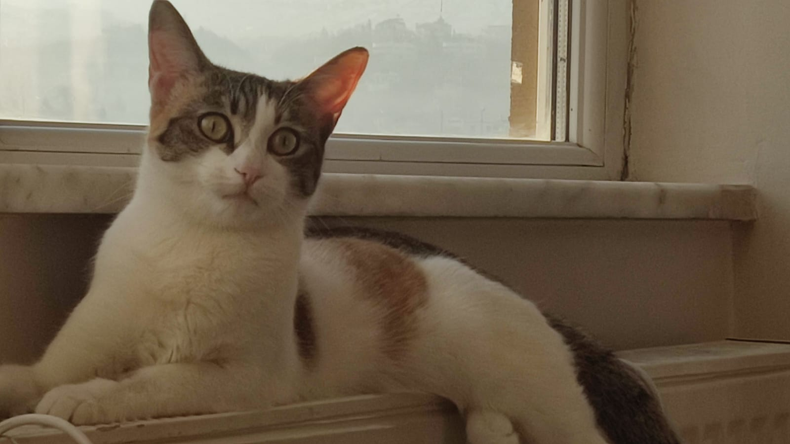
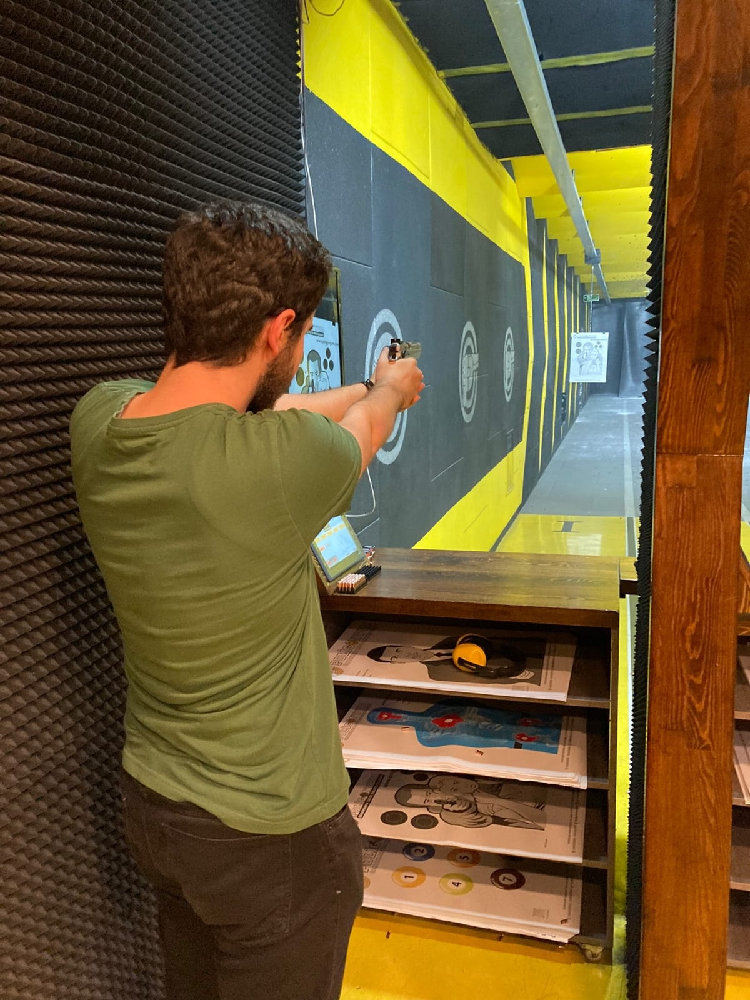
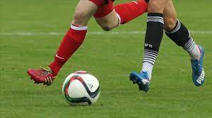
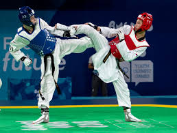
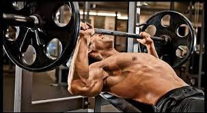

Ben Muhammed Yusuf YAĞCI. 27/04/2002 tarihinde Kayseri/Melikgazi'de
doğdum kayseriliyim.İki kardeşim var bir kız bir erkek, annem
matematik öğretmeni ,babam metal bölüm öğretmeni. Ailem kayseride
yaşıyor ben üniversite için Sakaryaya geldim. Sakaryada özel bir
yurtta ikamet ediyorum.Sakarya üniversitesi bilgisayar mühendisliği
1.sınıf öğrencisiyim mühendislikten önce hazırlık sınıfı okudum. En
büyük hayallerimden biri her alanda biraz bilgisi olan ama bazı
alanlarda uzman olan tam donanımlı başarılı bir mühendis olarak
bağımsız Türkiye-Milli teknoloji hamlesinin önde gelen isimlerinden
biri olmak. Hobilerim ,sevdiğim ilgi duyduğum sporlar ve katılmaktan
keyif aldığımı etkinlikleri aşağıda anlatıyorum :
HOBİLERİM
Kitap okumak = (düzenli olmasada kitap okumayı çok severim)
rus edebiyatını okurken zamanın nasıl geçtiğini fark etmem bile.
Dizi ve Film izlemek = Film izlemek daha çok hoşuma gider
çünkü diziye başlarım ve dizi sararsa bu sefer tüm sezonları
izlemeden başından ayrılamam o yüzden dizileri çok müsait olduğum
zaman dilimlerinde sadece diziye odaklanarak izlemeyi seviyorum ama
film öyle değil keyfime göre en çokta aksiyon ve bilim-kurgu film
izlemeyi severim.
Evcil hayvan = Eylül adında bir kedim var düzenli olarak
onunla koşturmayı ,onu mırlatmayı , onu izlemeyi ve beraber uzanmayı
çok severim.
Youtube izlemek =Youtube daki komik içerik üreticilerini ,
teknoloji sayfalarını , oyun yorumlarını ve oynanışı ,yazlımcı
vloglarını ve zanaat sayfalarının videolarını izlemeyi severim.
Oyun oynamak =Bir pc'ci olarak oyun oynamayı severim kendime
tam olarak gamer diyemesemde çeşitli oyunları oynamışlığım vardır.
Üniversiteye başladığımdan beri bu hobim biraz zayıf kaldı çünkü
yoğunluktan ötürü çok fazla zaman ayıramıyorum . Burada da dizi de
olduğu gibi eğer seversem bitirmeden kalkamam.:)
kodlama yapmak = Daha yeni edindiğim bir hobi olsada en çok
geliştirmek ve üstüne düşmek istediğim hobim daha jr seviyede
olsamda programlama ile ilgilenmek beni mutlu ediyor . Hatta daha
tam olarak içerik üretmeye başlamış olmasamda kodlama üzerine bir
instagram hesabı açtım inşallah öğrendikçe ve geliştikçe oraya
içerik olarak öğrendiklerimi aktaracağım instagram hesabımı buraya
bırakıyorum :
@string_coding
Egzersiz ve yürüyüş yapmak =Şarkı dinleyerek yapılan bir
yürüyüşün ardından ağırlık antrenmanı yapmak bana kendimi çok iyi
hissettirir bu yüzden düzenli olmasada haftada 2-3 kez ya ikisini
bir yaparım ya da sadece birini yaparım.
Halı saha yapmak =Son zamanlarda pek yapamasamda yapmaktan
keyif aldığım hobilerimdendir özellikle yurt turnuvaları çok
çekişmeli ve heyecanlı geçer. Mevki olarak genelde defans oynasamda
kondisyonum iyiyse defans-forvet-oyun kurucu üçlemesine bürünüp
takıma 2-3 gol kazandırabilirim.
poligon =ilk defa üniversitede gittim ve bayıldım inanılmaz
keyifli ama çok maliyetli bir hobi ona rağmen çok sevdim eğer Maraş
depremi olmasaydı düzenli olarak ayda bir yapmayı düşünüyordum.

Evcil Hayvan
Kitap okumak
Dizi film izlemek
Youtube izlemek

Atış yapmak
SEVDİĞİM SPORLAR
Futbol= Oynamasını izlemekten daha çok severim babadan gelme
bir heves aslında babam çocukken çok fena oynarmış genetik olarak
bende de var bir futbol sevdası .
Fenerbahçeliyim evet ne
kadar zor olduğunu biliyorum ama öyle :)inşallah bu sene şampiyonuz
jorge jesus dedem yapacak gibi bu işi ama hayırlısı:).
Voleybol =Keyif alarak oynadığım bir spordur.Lisede voleybol
turnuvasında 1.olmuşluğumuz var hala da imkan bulursam oynarım
üniversitemde de baya tutulan bir spor havalar güzelleşince
öğrenciler başlar voleybol oynamaya sabahtan akşama kadar.
basketbol =İçimde hep ukte olarak kalan bir spordur çok
severim ama hiç tam odaklanıp üstüne düşemedim ne kadar istesemde
ama oynamaktan büyük keyif alırım . İzlemesi ise daha başka bir
keyiftir.
Taekwondo(dövüş sporları) =Çocukken mavi kuşağa kadar
yükselmiştim sonra bir hastalık geçirip bırakmak zorunda kaldım.
Aradan geçen senelerin ardından tekrardan heveslendim daha
başlamadım ama aklımda. Onun yanında box da çok ilgimi çeker Mike
Tyson ve Muhammed ali'nin maçlarını izleyip gaza gelirim çünkü bu
adamlar yüksek irade ve sonsuz azim örneğidirler.
Bodybuilding=Ağırlık kaldırmak çok keyifli bir iştir
gerçekten . Son tekrara giderkenki acı başka bir haz verir adama .
Bende bu sene başında başladım ama deprem ve sınavlardan ötürü
düzenli olarak yapamadım. Fiziksel olarak yapamasamda teorik olarak
çoğu şeyi öğrendim.
Masa tenisi = İyi oynarım ama karşıma harbiden bilen biri
çıkınca afallarım . Onunlada oynadıkça oynayışımı düzeltirim.
Oynamasını severim izlemesi de keyiflidir özellike profesyonel
turnuvaları çok fenadır.
Okçuluk =İlk defa üniversitede denedim ve çok hoşuma gitti
Maraş depremi olmasaydı ikinci dönem kulübe yazılıp devam etmek
istiyordum ama seneye inşallah.

Futbol

Taekwondo

Bodybuilding
SEVDİĞİM ETKİNLİKLER
Konsere gitmek =Sevdiğim grupların konserlerine gidip yürüyüş
yaparken ya da kod yazarken dinlediğim şarkıları canlı olarak
dinlemeyi severim.
Doğa yürüyüşü =İzcilik kulüplerinin ya da doğa kulüplerinin
düzenlemiş olduğu programlara katılıp daha önce hiç gitmediğim
dağ,bayır,ova,plato ve ormanlarda yürüyüş yapmayı severim.
Agalar gecesi=Arkadaşlarımla bir araya gelip akşama doğru
önce okey kapışması sonra abur cubur eşliğinde film seyderip sabaha
kadar sohbet edip dertleşmek.
Festivaller ve Tanıtımlar= Özellikle teknoloji üzerine
olanlara gidip bir şeyler öğrenip ufkumu genişletmeyi çok severim
örnek vermek gerekirse teknofest çok sevdiğim bir festivaldir.